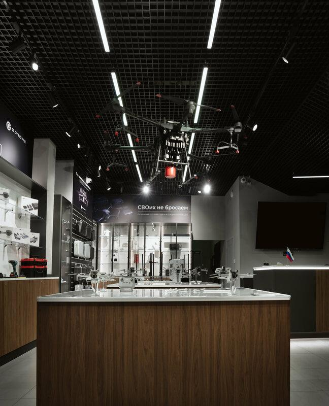
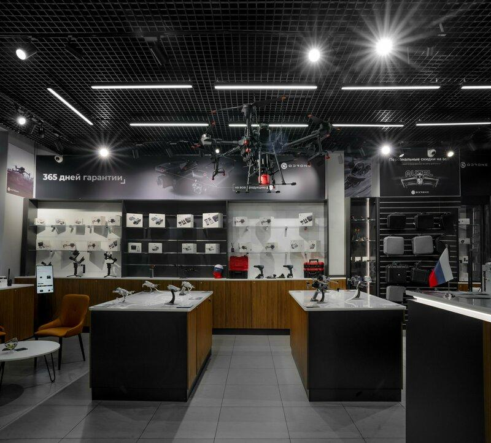
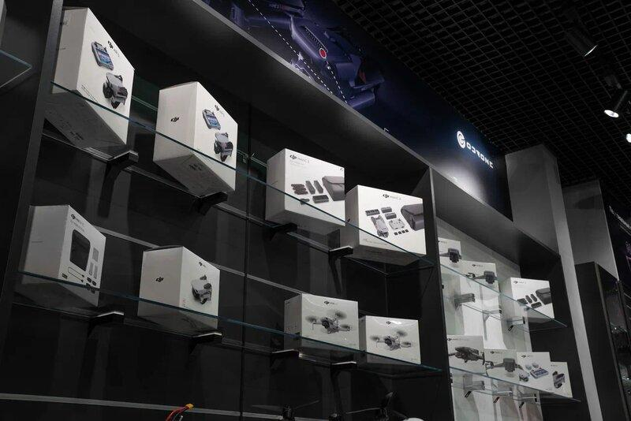
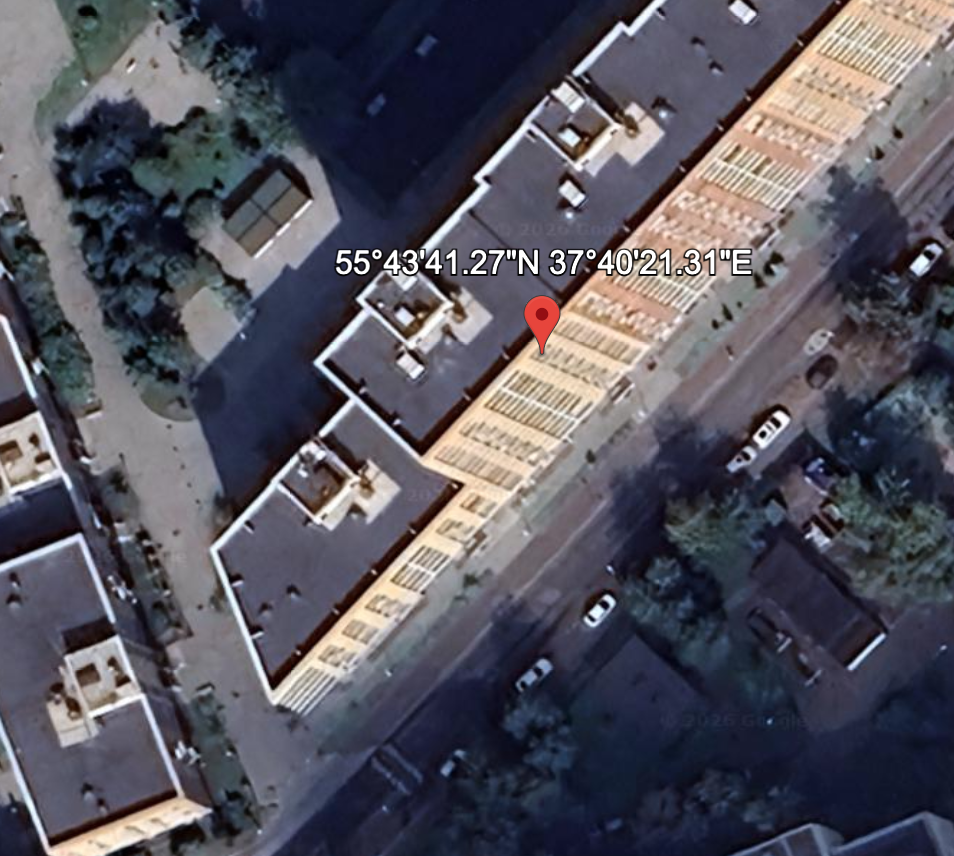
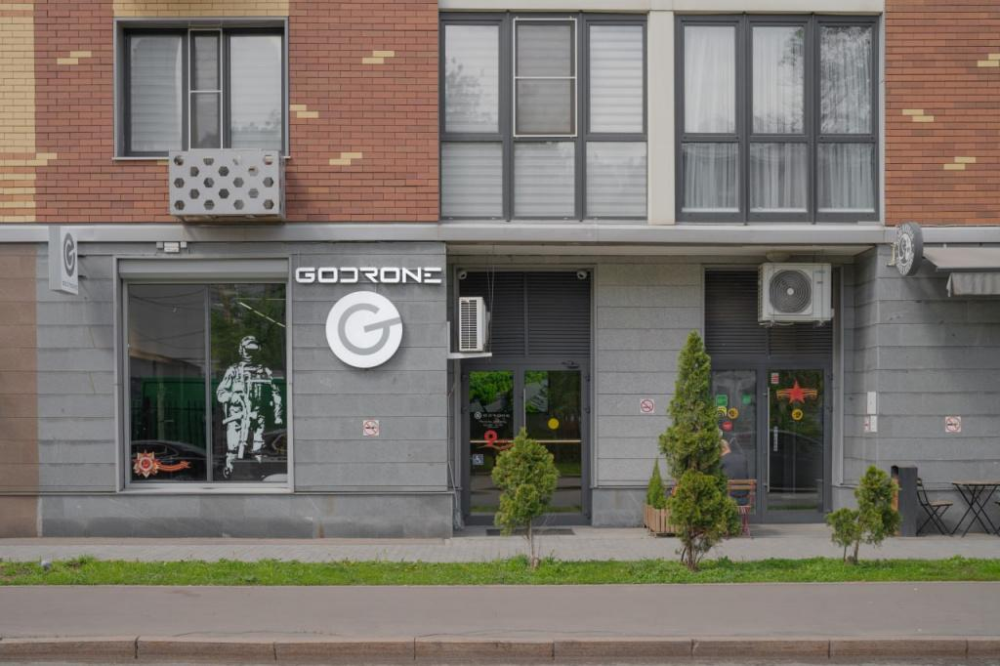

Company register
- INN
- 9721203814
- OGRN
- 1237700265846
- Registered
- 07.04.20231
- Registered address
- 111677, Moskva, vn.ter.g. munitsipalnyy okrug NekrasovkaRussian111677, Москва, вн.тер.г. муниципальный округ Некрасовка6
- Main activity (OKVED)
- 46.43: Wholesale of electrical household appliancesRussianТорговля оптовая бытовыми электротоварами1
- Charter capital
- ₽10 0006
- Director
- Dmitriy KozlovRussianКозлов Дмитрий Сергеевич, as of 07.04.20231
- Owner
- Dmitriy KozlovRussianКозлов Дмитрий Сергеевич, 100% share, as of 07.04.20236
Where it is
- Registered address (register)
- 111677, Moskva, vn.ter.g. munitsipalnyy okrug NekrasovkaRussian111677, Москва, вн.тер.г. муниципальный округ Некрасовка6
- Legal address (its own site)
- 111677, Rossiya, g. Moskva, ul. Ukhtomskogo opolcheniya, d. 2, of kv. 131Russian111677, Россия, г. Москва, ул. Ухтомского ополчения, д. 2, оф кв. 1318,9
- Actual address (showroom)
- g. Moskva, Bolshoy Simonovskiy per., d. 2Russianг. Москва, Большой Симоновский пер., д. 29,10,11,12
- Phones
- +7 495 151-51-93 · Main line; listed as the retail department on the contacts page8,10,13,14
+7 930 036-94-70 · Corporate department10,12
+7 930 035-33-75 · Phone printed on the product site12
+7 999 333-45-09 · Showroom phone in channel posts15,16
+7 999 444-50-59 · Showroom phone in channel posts; WhatsApp link on godrone.ru17,18,19
+7 958 795-01-33 · Orders, pre-orders and promotions in channel posts20,21
+7 958 488-39-86 · Phone on the company presentation22 - sales@godrone.ru · Sales e-mail on godrone.ru and the product site10,12
godronells@gmail.com · E-mail on the requisites page8
205@gdrone.ru · Contact e-mail in the privacy policy (domain gdrone.ru, not godrone.ru)9
partner@gdrone.ru · Partner e-mail on the product site (domain gdrone.ru)12 - Messengers
- Telegram @GoDrone · The company's channel19
Telegram @GoDron_bot · Bot linked from godrone.ru19
Telegram @godrone_ru · Orders and questions, named in channel posts20
Telegram @godrone_press · Reviews and field reports, named in channel posts20
WhatsApp +7 999 444-50-59 · Link on godrone.ru19
Max (bot id7720907532_bot) · Link on godrone.ru19





Sanctions
No US, EU, UK or Swiss list entry carries its INN, as of the lists downloaded 02.10.202625,26,27,28
Timeline
Annual accounts
Products
- «Nabat v3»Russian«Набат v3»34
Price list on the company's own site, 07.09.2026: “Bank transfer (for military): 100,000 RUB. Card / SBP (military): 106,000 RUB.”RussianПеревод (военным): 100 000 ₽. Карта / СБП (Военные): 106 000 ₽.35
Price list on the company's own site, 23.10.2026: “By the end of the month the drone detector «Nabat v.3» is available at a special price, only ₽90,000.”RussianДо конца месяца дрон‑детектор «НАБАТ в.3» доступен по особой цене — всего 90 000 ₽.36
The product site is the company's: it presents itself as GoDrone, gives the address Bolshoy Simonovsky pereulok 2 and the e-mail sales@godrone.ru, and links to godrone.ru. That site's privacy policy (edition of 22.10.2026) names its operator as the company itself, by its INN 9721203814 and OGRN 1237700265846, with the same address as its contact.129
Handovers it reports
As the company reports them on its own channel.
- 50th Guards Regiment (artillerymen)Russian50-й гвардейский полк (артиллеристы): «Nabat» drone detectors (quantity not stated), via Kirill Fyodorov, a military commentator (named in the post)37
- military airfields and combat groups (SVO zone)Russianвоенные аэродромы и боевые группы (зона СВО): 50 × «Nabat V.2.C» (announced as about to be sent), via Kirill Fyodorov, a military commentator (named in the post)38
- airfields (pilots in air combat)Russianаэродромы (лётчики, участвующие в воздушных боях): «Nabat V.2.C» detectors and other equipment worth over ₽12m together, via Kirill Fyodorov, a military commentator (named in the post)39
- Cossack artillery brigade «Volga»Russianказачья артиллерийская бригада «Волга»: «Nabat V.2.C» detectors within a large humanitarian load, via State Duma deputy Viktor Vodolatsky (named in the post)40
- the «Two Majors» fund (for passing on to front sectors)Russianфонд «Два майора» (для передачи на участки фронта): 6 drone detectors41
- servicemen of the 101st RegimentRussianвоеннослужащие 101-го полка: 3 × «Nabat V.2.C», via the volunteer group «Help to Fellow-Countrymen»42
- a unit in the SVO zone (volunteers of the «Help the heroes of the 119th regiment» channel)Russianподразделение в зоне СВО (канал «Помощь героям 119 полка»): 1 × «Nabat V.2.C», via volunteers of the «Help the heroes of the 119th regiment» channel43
- tank crews of the 429th RegimentRussianтанкисты 429-го полка: 1 × «Nabat V.2.C», via Kirill Fyodorov, a military commentator (named in the post)44
- fighters of the 350th RegimentRussianбойцы 350-го полка: «Nabat V.2.C» detectors (quantity not stated), via the volunteer group «Grace to the Front»45
- the naval detachment «Española»Russianморской отряд «Эспаньола» (спецназ): 1 × «Nabat», described as handed over by the producer free of charge, via the «Two Majors» fund; the Nabat is described as «handed over by the producer free of charge» (the fund's words, quoted)46
- all strategic-aviation basesRussianвсе базы стратегической авиации: «Nabat V.2.C» detectors (quantity not stated), via Kirill Fyodorov, a military commentator (named in the post)47
- Zaporizhzhia nuclear power plantRussianЗапорожская атомная электростанция: «NABAT.V3» with a video-interception screen48
In its own words
Translation“The company has been working with the brigade's servicemen for a long time.”RussianУже продолжительное время компания сотрудничает с бойцами бригады., 21.03.202549
Translation“We send devices with volunteers and individually. And a great deal is done free of charge.”RussianМы отправляем устройства с волонтерами и в индивидуальном порядке. И очень многое делается на безвозмездной основе., 02.04.202520
Translation“Note that since September 2024 more than 3,000 «Nabat» UAV detectors have been supplied to combat units.”RussianОтметим, что с сентября 2024 года в боевые подразделения поставлено более 3000 детекторов БПЛА «Набат»., 16.04.202550
Translation“The firmware is installed at the company's service centre within a day, free of charge and only for SVO participants.”RussianПрошивка в Сервисном центре компании осуществляется в течение суток исключительно на безвозмездной основе и только для участников СВО., 28.04.202551
Translation“In the GoDrone shop the Matrice 4T will be sold with a special firmware, suitable for use in combat as well.”RussianВ магазине GoDrone Matrice 4T будет продаваться со специальной прошивкой — подойдет и для применения в боевых действиях., 04.06.202552
Translation“Training of pilots to fly fixed-wing (VTOL) UAVs for reconnaissance and special tasks in the SVO zone”RussianОбучение пилотов управлению БПЛА самолётного типа (VTOL) для выполнения разведывательных и специальных задач в зоне СВО, 22.09.202522
Translation“We work with state procurement under 223-FZ and 44-FZ. Necessary certificates and licences are in place”RussianРаботаем с госзакупками по 223 и 44-ФЗ. Наличие необходимых сертификатов и лицензий, 22.09.202522
Translation“state institutions in 12 regions of Russia”Russianгосударственные учреждения в 12 регионах России, 22.09.202522
Translation“We provide security for industrial companies”RussianОбеспечиваем безопасность промышленных компаний, 22.09.202522
Translation“The detector reacted in time! We managed to land the Mi-8 and save the crew!”RussianДетектор среагировал вовремя! Успели посадить Ми-8 и спасти экипаж!, 22.09.202522
Translation“One of the largest service centres in Moscow in the field of UAV maintenance”RussianОдин из крупнейших сервисных центров в Москве в сфере обслуживания БПЛА, 22.09.202522
Translation“5. Invisible to Aeroscope and similar systems. The drone stops transmitting the telemetry that allows the operator to be tracked.”Russian5. Невидимость для «Аэроскопа» и аналогичных систем Дрон перестает передавать телеметрию, которая позволяет вести слежение за оператором., 19.11.202553
Translation“Recently we, together with a large enterprise, finished installing coordinate-spoofing boards on a large batch of Mavic 4. GoDrone engineers carried out the full front-line preparation cycle for almost 100 aircraft: board installation, tests, quality control. All of it has been handed to the fighters and is already working in the SVO.”RussianНа днях мы, совместно с большим предприятием, завершили установку плат подмены координат на крупную партию Mavic 4. Инженеры GoDrone провели полный цикл фронтовой подготовки для почти 100 аппаратов — установка плат, тесты, контроль качества. Все передано бойцам и уже работает на СВО., 03.12.202554
Translation“First priority: front-line units. Part of the batch is already on its way to the SVO zone.”RussianПервый приоритет: фронтовые подразделения — часть партии уже на пути в зону СВО., 08.12.202555
Translation“The «NABAT.V3» UAV detector has been deployed at the Zaporizhzhia nuclear power plant.”RussianДетектор БПЛА «НАБАТ.V3» развернут на Запорожской атомной электростанции., 26.12.202548
Translation“«NABAT V.3»: several hundred devices shipped; video-interception cables sent to everyone free of charge”Russian«НАБАТ V.3»: отгружено несколько сотен устройств, бесплатно отправили всем провода для видеоперехвата, 20.01.202656
Translation“We don't abandon our own [wordplay embedding "SVO" inside "svoikh"/"our own"]”RussianСВОих не бросаем, 25.08.20267
Translation“Areas of application: Protection of equipment and personnel under SVO conditions.”RussianСферы применения: Защита техники и личного состава в условиях СВО., 07.09.202635
Translation“GoDrone became the winner of the All-Russian national prize «Gunsmith of the Year 2026» in the nomination «Universal Soldier».”RussianКомпания GoDrone стала победителем Всероссийской национальной премии «Ружейник года — 2026» в номинации «Универсальный солдат»., 07.10.202657
Translation“The «Nabat» drone detector was developed at the many requests of servicemen in the SVO zone, who faced an acute need for effective means of detecting and countering enemy UAVs.”RussianДетектор дронов "НАБАТ" был разработан по многочисленным запросам военнослужащих в зоне СВО, которые столкнулись с острой необходимостью в эффективных средствах обнаружения и противодействия вражеским БПЛА., 26.10.202619
Translation“Our clients include SVO participants, volunteer organisations, and state and commercial bodies.”RussianСреди наших клиентов — участники СВО, волонтерские организации, а также государственные и коммерческие структуры., 26.10.202658
Trademarks and patents
Links to TsBST and the state
- Documented Linked to TsBST59
Sellers of its products
None recorded.
What this page does not show
- Handovers listed here are the company's own account on its Telegram channel. Each is one post; none is confirmed by the recipient, and a post that names a regiment by number alone does not identify the unit.
- No document records the company as a formal member of a TsBST programme. Its link to TsBST rests on the posts and statements cited here.
- No state contract is on record for it: a search of the state contract register (zakupki.gov.ru, 44-FZ) for its INN as supplier on 26.10.2026 found none. Purchases under other entities or unpublished purchases would not show.
- No foreign components in its products are documented.
Facts here come from documents: the company register, its filed accounts, the patent and trademark registers, sanctions lists and its own posts. Entries resting on anything weaker are marked Reported and named above.
Sources
- Company register extract (EGRUL, Federal Tax Service) for OGRN 1237700265846, 23.08.2026.
- Archived document.
- Sanctions-list entries compiled by OpenSanctions, checked 24.08.2026.
- Ukraine's State Register of Sanctions (Державний реєстр санкцій, NSDC), export of legal subjects, downloaded 26.10.2026 (latest decree in the file: 1059/2026 of 24.10.2026). drs.nsdc.gov.ua ↗
- Annual accounts filed with the Federal Tax Service, INN 9721203814, FY 2025.
- Company register extract (EGRUL, Federal Tax Service) for INN 9721203814, 07.09.2026.
- Web page, archived 25.08.2026.
- Requisites page of godrone.ru (ООО «Гоудрон», ИНН, ОГРН, registered address). godrone.ru ↗
- Privacy policy of godrone.ru (edition of 22.10.2026), operator ООО «ГОУДРОН». godrone.ru ↗
- Contacts page of godrone.ru: address, hours, two phone lines and e-mail. godrone.ru ↗
- Stores page of godrone.ru: the GoDrone showroom at Bolshoy Simonovsky pereulok 2. godrone.ru ↗
- Home page of набат.рф («Детектор дронов Набат V3»). xn--80aac0c2a.xn--p1ai ↗
- Telegram, @godrone, post 2491, 22.04.2026 (transcript of the database text, not a capture of the page). t.me ↗
- Telegram, @godrone, post 2887, 02.07.2026 (transcript of the database text, not a capture of the page). t.me ↗
- Telegram, @godrone, post 482, 11.02.2025 (transcript of the database text, not a capture of the page). t.me ↗
- Telegram, @godrone, post 1124, 12.06.2025 (transcript of the database text, not a capture of the page). t.me ↗
- Telegram, @godrone, post 343, 30.12.2024 (transcript of the database text, not a capture of the page). t.me ↗
- Telegram, @godrone, post 2901, 03.07.2026 (transcript of the database text, not a capture of the page). t.me ↗
- About-the-company page of godrone.ru. godrone.ru ↗
- Telegram, @godrone, post 732, 02.04.2025 (transcript of the database text, not a capture of the page). t.me ↗
- Telegram, @godrone, post 2518, 28.04.2026 (transcript of the database text, not a capture of the page). t.me ↗
- Company presentation of ООО «ГОУДРОН», 18 pages (file dated 22.09.2025), downloaded from godrone.ru. godrone.ru ↗
- Satellite view of Bolshoy Simonovsky pereulok 2, Moscow (Google imagery, screenshot of 26.10.2026).
- Photo of the GoDrone showroom front, from the contacts page of godrone.ru. godrone.ru ↗
- US (OFAC SDN) sanctions list, full download, 02.10.2026.
- EU sanctions list, full download, 02.10.2026.
- UK (FCDO) sanctions list, full download, 02.10.2026.
- Swiss (SECO) sanctions list, full download, 02.10.2026.
- Trademark registration no. 1203185, Rospatent (FIPS). new.fips.ru ↗
- Trademark registration no. 1088602, Rospatent (FIPS). new.fips.ru ↗
- Trademark registration no. 1085944, Rospatent (FIPS). new.fips.ru ↗
- Annual accounts filed with the Federal Tax Service, INN 9721203814, FY 2023.
- Annual accounts filed with the Federal Tax Service, INN 9721203814, FY 2024.
- «Детектор дронов Набат V3 – официальная страница», web page on набат.рф, archived 25.08.2026. xn--80aac0c2a.xn--p1ai ↗
- Home page of набат.рф («Детектор дронов Набат V3»), archived 07.09.2026. xn--80aac0c2a.xn--p1ai ↗
- Offer «Специальная акция для военнослужащих» on godrone.ru, 23.10.2026. godrone.ru ↗
- Telegram, @godrone, post 301, 12.12.2024 (transcript of the database text, not a capture of the page). t.me ↗
- Telegram, @godrone, post 338, 28.12.2024 (transcript of the database text, not a capture of the page). t.me ↗
- Telegram, @godrone, post 432, 30.01.2025 (transcript of the database text, not a capture of the page). t.me ↗
- Telegram, @godrone, post 489, 13.02.2025 (transcript of the database text, not a capture of the page). t.me ↗
- Telegram, @godrone, post 562, 24.02.2025 (transcript of the database text, not a capture of the page). t.me ↗
- Telegram, @godrone, post 573, 26.02.2025 (transcript of the database text, not a capture of the page). t.me ↗
- Telegram, @godrone, post 791, 16.04.2025 (transcript of the database text, not a capture of the page). t.me ↗
- Telegram, @godrone, post 822, 21.04.2025 (transcript of the database text, not a capture of the page). t.me ↗
- Telegram, @godrone, post 968, 20.05.2025 (transcript of the database text, not a capture of the page). t.me ↗
- Telegram, @godrone, post 1098, 08.06.2025 (transcript of the database text, not a capture of the page). t.me ↗
- Telegram, @godrone, post 1150, 17.06.2025 (transcript of the database text, not a capture of the page). t.me ↗
- Telegram, @godrone, post 1971, 26.12.2025 (transcript of the database text, not a capture of the page). t.me ↗
- Telegram, @godrone, post 695, 21.03.2025 (transcript of the database text, not a capture of the page). t.me ↗
- Telegram, @godrone, post 790, 16.04.2025 (transcript of the database text, not a capture of the page). t.me ↗
- Telegram, @godrone, post 848, 28.04.2025 (transcript of the database text, not a capture of the page). t.me ↗
- Telegram, @godrone, post 1078, 04.06.2025 (transcript of the database text, not a capture of the page). t.me ↗
- Telegram, @godrone, post 1806, 19.11.2025 (transcript of the database text, not a capture of the page). t.me ↗
- Telegram, @godrone, post 1862, 03.12.2025 (transcript of the database text, not a capture of the page). t.me ↗
- News item «Первая партия детектора дронов «Набат 3» готова к отправке» on godrone.ru, 08.12.2025. godrone.ru ↗
- Telegram, @godrone, post 2043, 20.01.2026 (transcript of the database text, not a capture of the page). t.me ↗
- Telegram, @godrone, post 3346, 07.10.2026 (transcript of the database text, not a capture of the page). t.me ↗
- Page «Товары для волонтеров и участников СВО» on godrone.ru. godrone.ru ↗
- Telegram, @godrone, post 1896, 09.12.2025 (transcript of the database text, not a capture of the page). t.me ↗